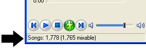
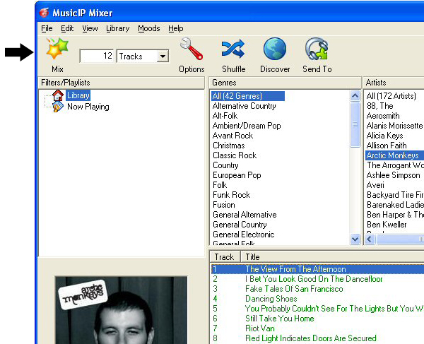
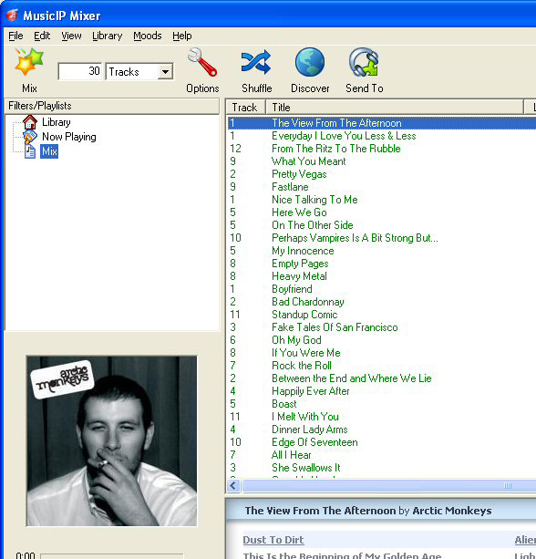

You've successfully installed MusicIP Mixer version 1.9. PRIVACY Below are some tips to maximize your use of MusicIP Mixer. GETTING STARTED The MusicIP Mixer uses a phases process to analyze your songs, and you can make mixes with songs as soon as they are ready. The first phase completes relatively quickly, so you can start creating mixes within minutes! Tracks that are mixable will be highlighted in green while those tracks requiring further analysis are in red. While you're making your first mixes, we suggest you keep the application running until you see that all songs are ready in the status bar. You can, however, exit the application whenever you like, and processing will resume without any problems the next time the application runs.  GENERATING PLAYLISTS  A list of similar songs will appear in the lower window, using the originally chosen song as the touchstone.  Next, you can press the Play button to play the selected songs, or the Send To button to send the selected songs to your music player. The Mixer also supports dragging & dropping on to your portable device, music player, or CD burner as supported by those applications. As you become more familiar with the Mixer, you may want to browse through our Tips & Tricks section for some more advanced options and settings. Note that you can configure the size of the generated lists from the toolbar. For more information, consult the online help. We hope you enjoy MusicIP Mixer and want to hear from you with any comments or suggestions you may have. We can be reached at support@musicip.com, or visit our forums at http://forums.musicip.com |